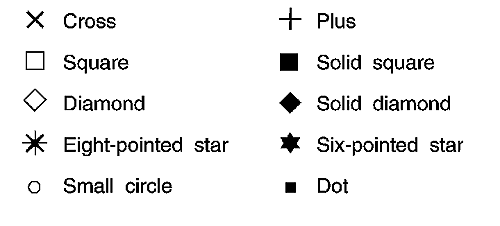

The current marker symbol is selected from the current marker set using GpiSetMarker. The marker symbol selected for the specified presentation space is used for all subsequent GpiMarker and GpiPolyMarker calls until a new symbol is selected.
The following table describes the marker symbols provided by the PM in a base marker set. These symbols are not necessarily available from other marker sets.
The Base Marker Set
旼컴컴컴컴컴컴컴컴컫컴컴컴컴컴컴컴컴컴컴컴컴컴컴컴컴쩡컴컴컴컴커 쿞ymbol 쿔dentifier 쿗ong Value� 쳐컴컴컴컴컴컴컴컴컵컴컴컴컴컴컴컴컴컴컴컴컴컴컴컴컴탠컴컴컴컴캑 쿎ross 쿘ARKSYM_CROSS �1L � 쳐컴컴컴컴컴컴컴컴컵컴컴컴컴컴컴컴컴컴컴컴컴컴컴컴컴탠컴컴컴컴캑 쿛lus sign 쿘ARKSYM_PLUS �2L � 쳐컴컴컴컴컴컴컴컴컵컴컴컴컴컴컴컴컴컴컴컴컴컴컴컴컴탠컴컴컴컴캑 쿏iamond 쿘ARKSYM_DIAMOND �3L � 쳐컴컴컴컴컴컴컴컴컵컴컴컴컴컴컴컴컴컴컴컴컴컴컴컴컴탠컴컴컴컴캑 쿞quare 쿘ARKSYM_SQUARE �4L � 쳐컴컴컴컴컴컴컴컴컵컴컴컴컴컴컴컴컴컴컴컴컴컴컴컴컴탠컴컴컴컴캑 쿞ix-point star 쿘ARKSYM_SIXPOINTSTAR �5L � 쳐컴컴컴컴컴컴컴컴컵컴컴컴컴컴컴컴컴컴컴컴컴컴컴컴컴탠컴컴컴컴캑 쿐ight-point star 쿘ARKSYM_EIGHTPOINTSTAR �6L � 쳐컴컴컴컴컴컴컴컴컵컴컴컴컴컴컴컴컴컴컴컴컴컴컴컴컴탠컴컴컴컴캑 쿞olid diamond 쿘ARKSYM_SOLIDDIAMOND �7L � 쳐컴컴컴컴컴컴컴컴컵컴컴컴컴컴컴컴컴컴컴컴컴컴컴컴컴탠컴컴컴컴캑 쿞olid square 쿘ARKSYM_SOLIDSQUARE �8L � 쳐컴컴컴컴컴컴컴컴컵컴컴컴컴컴컴컴컴컴컴컴컴컴컴컴컴탠컴컴컴컴캑 쿏ot 쿘ARKSYM_DOT �9L � 쳐컴컴컴컴컴컴컴컴컵컴컴컴컴컴컴컴컴컴컴컴컴컴컴컴컴탠컴컴컴컴캑 쿞mall circle 쿘ARKSYM_SMALLCIRCLE �10L � 쳐컴컴컴컴컴컴컴컴컵컴컴컴컴컴컴컴컴컴컴컴컴컴컴컴컴탠컴컴컴컴캑 쿍lank, (Often 쿘ARKSYM_BLANK �64L � 쿬alled the � � � 쿶nvisible marker) � � � 읕컴컴컴컴컴컴컴컴컨컴컴컴컴컴컴컴컴컴컴컴컴컴컴컴컴좔컴컴컴컴켸The default marker symbol (MARKSYM_DEFAULT) is identical to the MARKSYM_CROSS symbol and has a long value of 0L. The error marker symbol (MARKSYM_ERROR) has a long value of -1L.
The following figure shows the visible marker symbols from the base marker set. Your application can determine the marker set with GpiQueryMarkerSet. 
The Base Marker Set